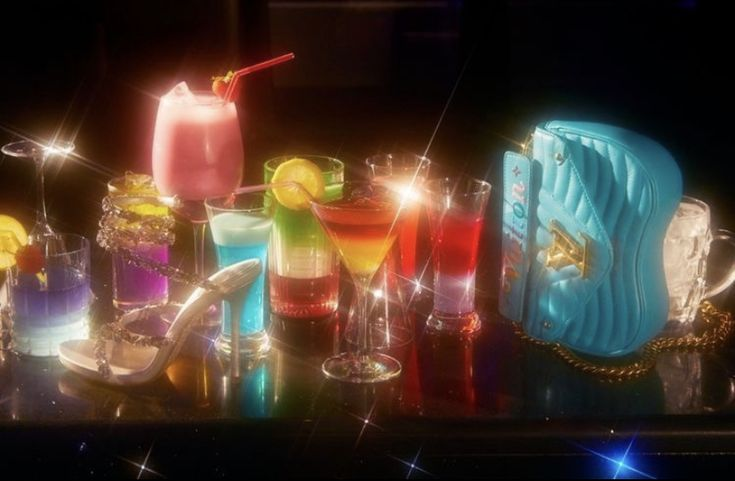
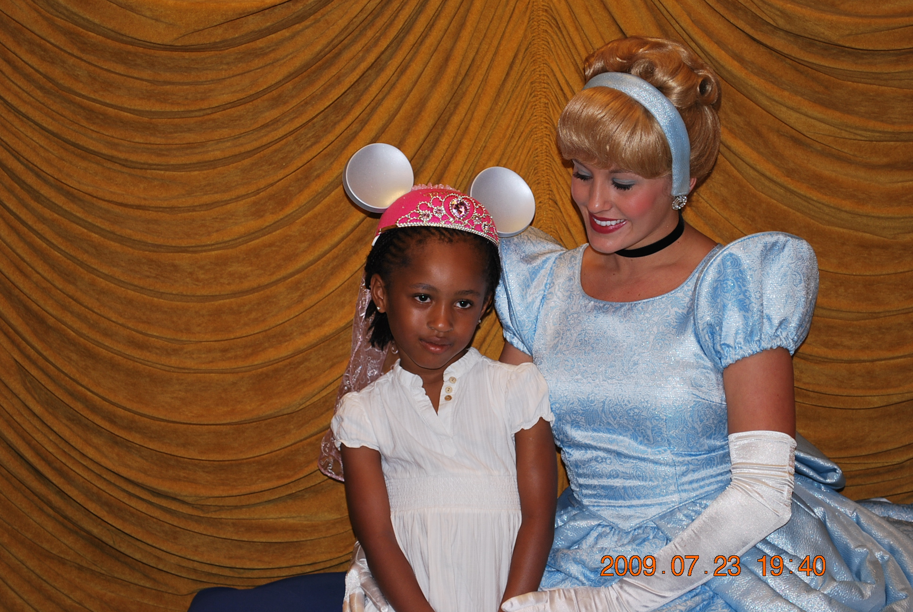

Writing
The Onyiverse is a reflective Substack newsletter curated by me, a writer and media curator. It delves into themes of identity, culture, intimacy, and selfhood through personal essays that blend philosophical inquiry with cultural critique. I aim to create "a space for people who can't help but ask why all the time," inviting my readers to explore nuanced perspectives on topics like beauty standards, linguistics, girlhood, and the societal expectations placed on women (and everyone).


New essays on culture, identity, and everything in between. Subscribe to get them in your inbox.